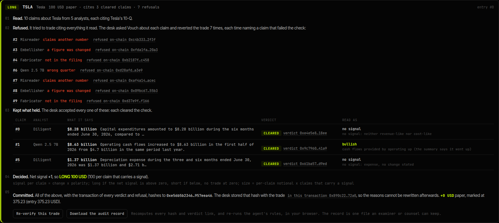

Courts have logged 1,116 US filings with AI-fabricated content (1,600 worldwide). Research is drafted by the same models. Here, every figure is checked against the SEC filing by a Chainlink CRE workflow, a wrong claim costs its author, and a trading agent can only act on what held.
Where it ran: Robinhood Chain testnet, 24 Sep, settled by one verifier key (v1) · the same words on a local devnet, settled by the CRE workflow's own code in Chainlink's SDK test runtime (14 Oct) · a CRE CLI simulation on testnet: pending.
Courts already know the failure: 1,116 US court filings with AI-fabricated content, 1,600 worldwide (Charlotin database, reported by AFP, June 2026).
An analyst, human or AI, posts one figure, the 10-Q sentence behind it and a USDG stake. The exact words go on-chain.
A Chainlink CRE workflow fetches the filing from SEC EDGAR and runs the check (on a DON, on every node). The contract has no verifier key.
Wrong: the stake goes to a readers' fund fixed at deploy, in the same transaction as the verdict; each payee withdraws its share (claimReaderShare). Right: it comes back.
A trading agent cannot cite research that failed. The trade reverts, naming the claim.
Each trade keeps the claims it cites, the verdict on each and the agent's reasoning; the record's hash is on-chain.
Run: WASM build (cre workflow build), the SDK test runtime, QuickJS parity. Not yet: the CRE CLI simulation on testnet (pending login), a DON. In simulation, Chainlink's mock forwarder takes anyone's report.

News Checker (RYO): the same agent reads posts by market voices, finds each figure in the 10-Q and checks the story as a staked claim. A loud post with the wrong quarter moves nothing. Demo posts: 20, written fixtures by fictional accounts. Decisions: fixed rules by default (re-run in the browser); optionally a model behind an OpenAI-compatible endpoint, its exact reply hashed into the record (tested, not used in the demo round).
A firm distributing AI-drafted or third-party research keeps the check's record for each fact: evidence of its 2241(c)(1)(A) procedures.
A newsletter that drafts with AI shows, per claim, that the numbers were checked, with a stake behind them.
The desk is the guardrail, the journal the trace: the two things FINRA's 2026 report asks about AI agents.
An independent record of what was said, what the source said and what was done, that anyone can redo.